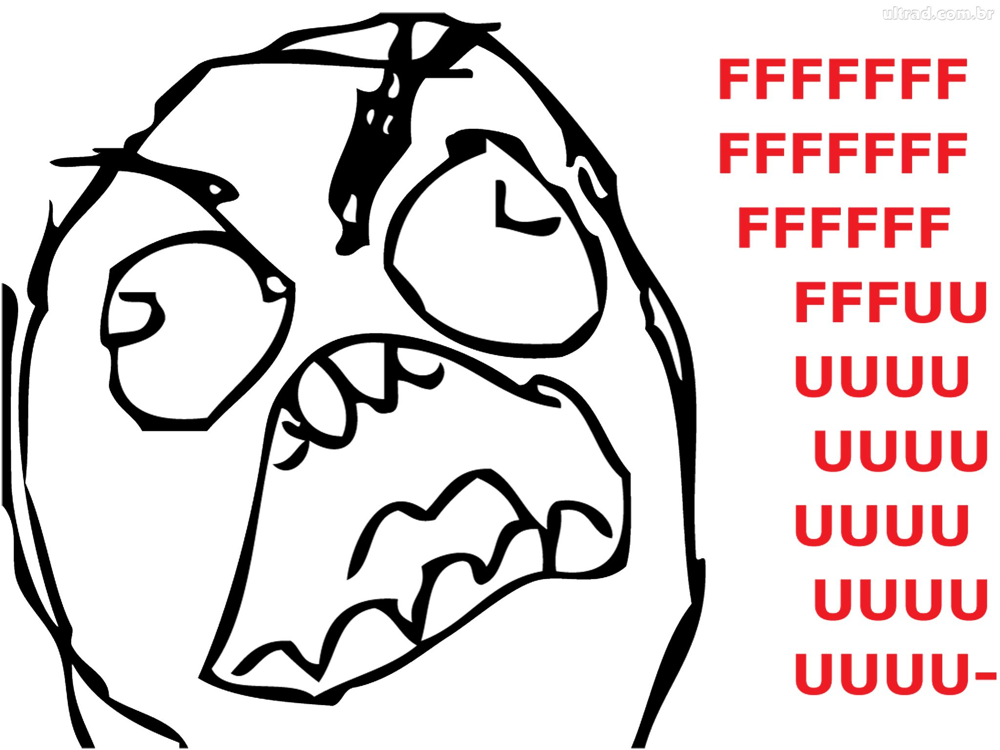

Ou le future de la conteneurisation
Hier
Aujourd'hui
Hier
Aujourd'hui
Développeur
Opérationnel
Docker
Hyperviseur
Machine virtuelle
Conteneur
Image
class Redis { ... }Conteneur
new Redis();Volumes
mount --bind)
Dockerfile
FROM ubuntu:xenialRUN apt-get update && apt-get install -y apache2 && apt-get clean && \rm -rf /var/lib/apt/lists/*RUN apt-get update && apt-get install -y php5 libapache2-mod-php5 \php5-mysql php5-cli && apt-get clean && rm -rf /var/lib/apt/lists/*EXPOSE 80CMD ["/usr/sbin/apache2", "-D", "FOREGROUND"]
Docker Engine
docker build -t starclay/apache-php .docker run -it starclay/apache-php:latestDocker Compose
CMD (ou ENTRYPOINT) lance un seul processdocker-compose upDocker Registry